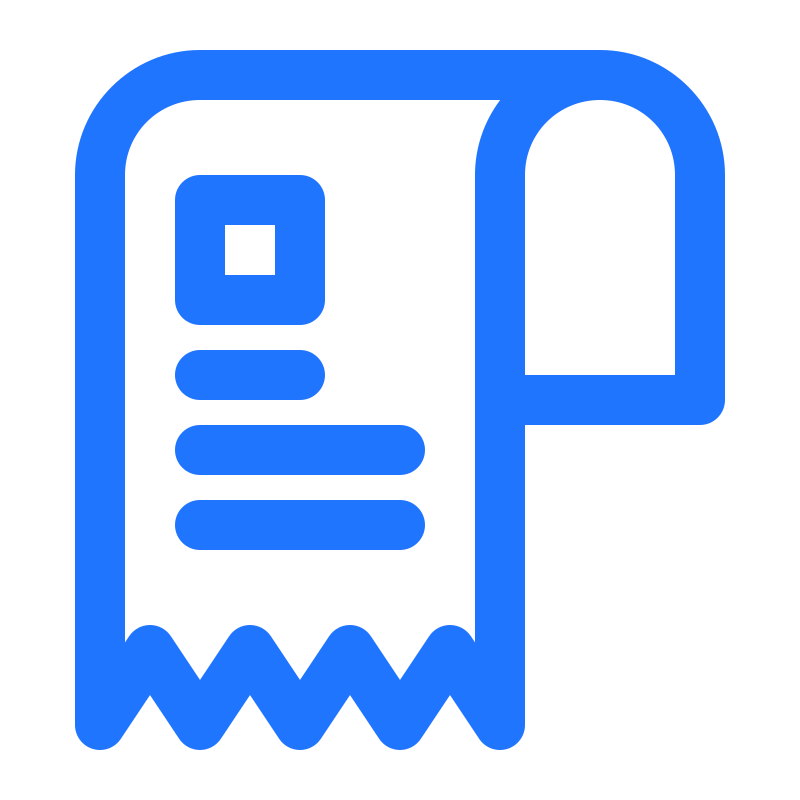
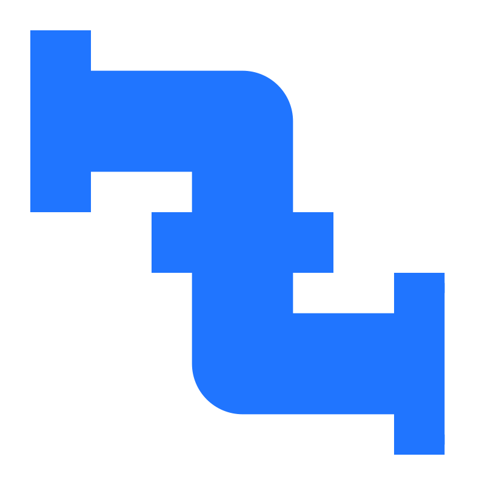

¿Tu recibo de agua llegó alto y no sabes por qué?
Fugas invisibles
Las fugas pueden pasar desapercibidas durante semanas o meses.
Desperdicio diario
El agua que desperdicias cada día es dinero perdido cada mes.
Falta de control
Sin información, es imposible saber dónde y cuánto se está consumiendo.

Consumo excesivo
Un consumo elevado afecta tu bolsillo y al medio ambiente.
Hasta el 30% del agua puede desperdiciarse por fugas no detectadas.
La solución: Easy Aqua
Una forma sencilla de segmentar, medir y controlar el flujo de agua en tu hogar.

Segmentación inteligente
Divide tu red de agua por zonas como baño, cocina, lavandería o jardín.
Monitoreo en tiempo real
Consulta el consumo de agua de cada zona desde una interfaz clara.
Corte remoto
Bloquea el flujo inmediatamente si detectas una fuga o uso anormal.
Alertas inteligentes
Recibe avisos cuando una zona tenga consumo continuo o sospechoso.
¿Cómo funciona?
Instala EasyAqua
Coloca el dispositivo en las tuberías de las zonas que deseas controlar.
Vincula tus zonas
Registra baño, cocina, patio, lavandería o cualquier área desde la app.
Monitorea el consumo
Visualiza cuánto se consume por zona y detecta comportamientos raros.
Corta el flujo
Activa o bloquea el paso del agua cuando necesites prevenir desperdicio.
Empieza a ahorrar agua hoy.
EasyAqua está pensado para hogares que quieren detectar fugas, ahorrar dinero y cuidar el agua.
Solicitar acceso anticipado